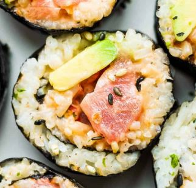

|

|
STEPS: (ingredients included)
- Prepare Sushi Rice: Allow rice to cool to room temperature before assembling rolls.
- Wrap Bamboo Mat in two long pieces of plastic wrap to tightly cover it from both sides. This will keep the rice or nori from sticking to it.
- Prep Nori: You can use whole sheets of Nori for large sushi rolls, or break nori sheets in half to make smaller spicy rolls (as pictured here). To do so, stack two or three sheets together and fold the nori in half, the two short ends coming together. Press to crease it, and then gently pull the sheets apart.
- Make Spicy Tuna Filling: Chop the tuna into small pieces and add to a bowl. Add sesame oil, mayo and sriracha and mix to combine.
- Assemble: Place bamboo mat on a counter in front of you, with the sticks parallel to you. Place a piece of nori on the mat, dull side up (long side parallel to you for a half-sheet roll, or short side parallel to you if using a whole sheet of nori). Place a small bowl of water next to your work station. Scoop roughly ½ or 1 cup of sushi rice (for small, or big rolls) onto the nori. Use wet fingers to gently move the rice, spreading it into an even layer across the nori (don’t smash it), but leave about a half inch of seaweed at the top end with no rice on it.
- Add Tuna: Scoop a spoonful of spicy tuna mixture on top of the rice, in a line slightly off center, closest to you. (Add two thin pieces of cucumber if desired).
- Roll: Use your finger to gently spread some water on the top of the seaweed that doesn’t have rice on it. Then lift the end of the bamboo mat closest to you up and over the ingredients. Continue to roll, pulling the bamboo mat away from you, until completely rolled. Press both hands on top of the bamboo mat and squeeze the sushi roll gently beneath it, to make sure it holds firmly together.
- Slice Sushi Roll: Cut spicy tuna roll into 6 portions.
- Serve: Serve with a cut end facing up and sprinkle chopped green onions on top. Optional: Drizzle with sriracha mayo, eel sauce, or top with fried onions.
|